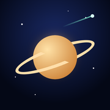
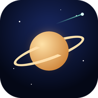

Camera is on. The picture is very dark because the night sky is too dim for a phone camera at normal settings.
Night camera
Lens
Camera hardware
Software boost works on every phone
Diagnostics
Open the camera to see its status.
A phone camera in live video can show bright stars and planets, the Moon, and bright satellites such as the ISS, Tiangong and fresh Starlink “trains”. For the best chance, use Night sky, rest the phone on something steady, and look 1–2 hours after sunset or before sunrise, when satellites are still in sunlight but your sky is dark. Fainter satellites won’t show on camera, but the overlay still marks exactly where each one is.
Layers & settings
Show
Live satellites CelesTrak TLEs
Camera
If labels drift away from real objects near the screen edges, adjust this until they line up.
Planets, Sun and Moon: Astronomy Engine (VSOP87, ±1″). Asteroids: today's NASA/JPL Horizons elements. Satellites: SGP4 on CelesTrak TLEs, recomputed every frame. Stars and distances: Hipparcos via d3-celestial and the HYG database (CC BY-SA 4.0). Pointing accuracy depends on your phone's compass (typically ±5–10°); tap Align on a known object to correct it.
SkyTrackerAR
Point your phone at the sky. See every planet, star, asteroid and satellite, including the ISS and Starlink, moving live.
10,000+ live satellites
±1″ planet accuracy
NASA/JPL asteroid orbits
Uses your camera, motion sensors and location. Your location never leaves your device.

Install SkyTracker: tap Share, then Add to Home Screen for full-screen use.

Install SkyTracker Full screen, faster start, works offline.